Technical Skills & Portfolio - QC Digitalization
Full Stack Development & Database Management
Laravel Web Application Development with MySQL Integration
Built production-grade Laravel applications with MySQL database backend for operational management. Developed centralized business monitoring platform consolidating sales, production, and quality data. Implemented role-based access control, user management, and API endpoints for system integration. Designed database schema, optimized queries, and ensured data integrity across multiple operational functions.
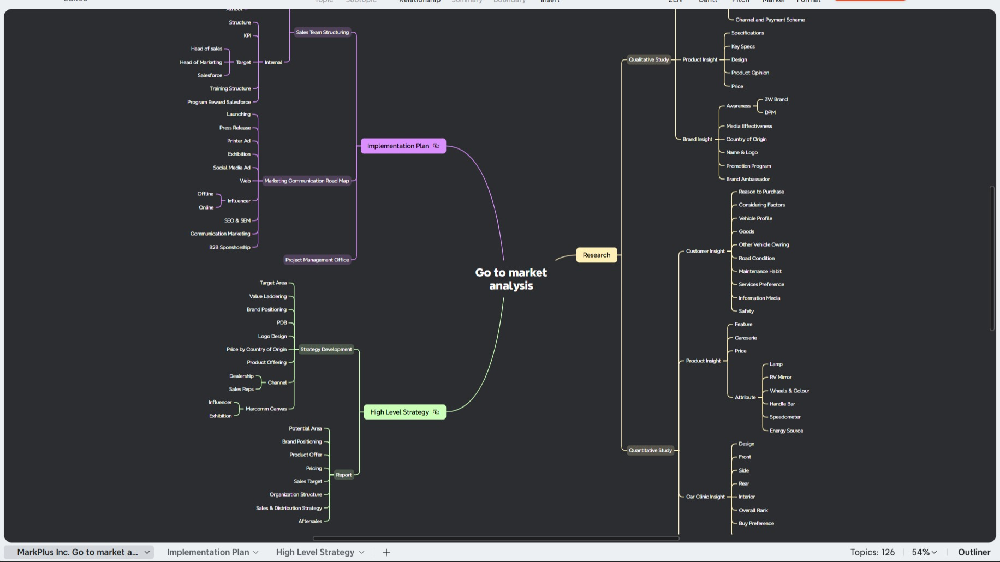
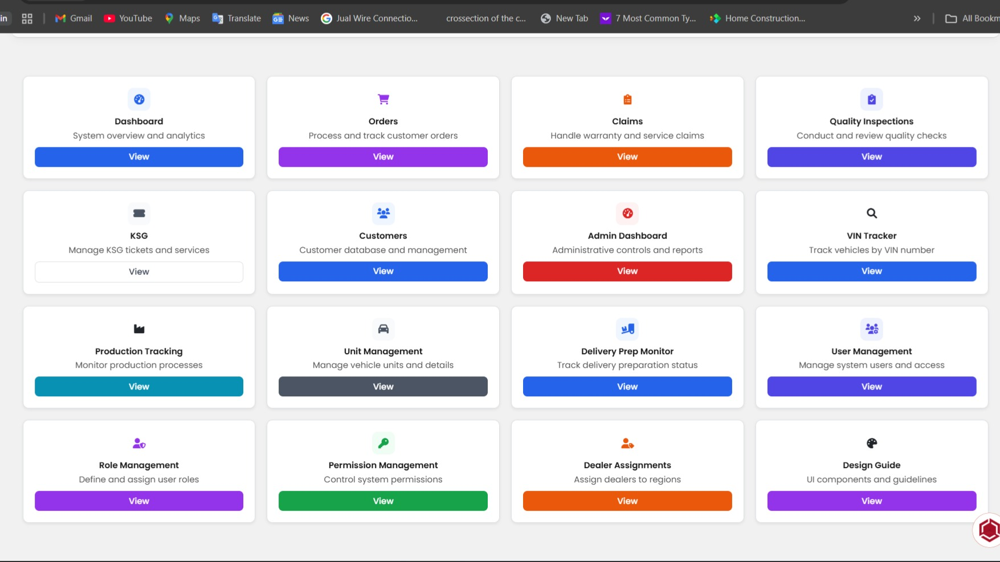


IoT & Quality Monitoring Systems
IoT-Based Andon System for Production Quality Control
Developed IoT-based Andon system using Arduino microcontrollers for real-time production quality monitoring. System monitors quality issues and operational abnormalities on shop floor with automated alerting. Applied 7 QC Tools including Fishbone Diagram, Pareto Analysis, and Scatter Diagram for structured problem identification and root-cause analysis. Improved production transparency and reduced response time to quality defects.
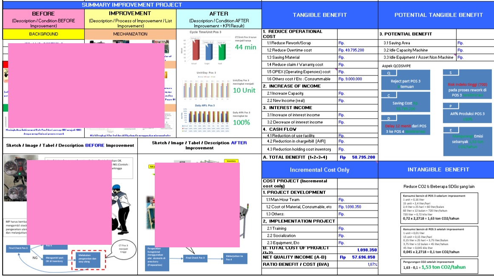
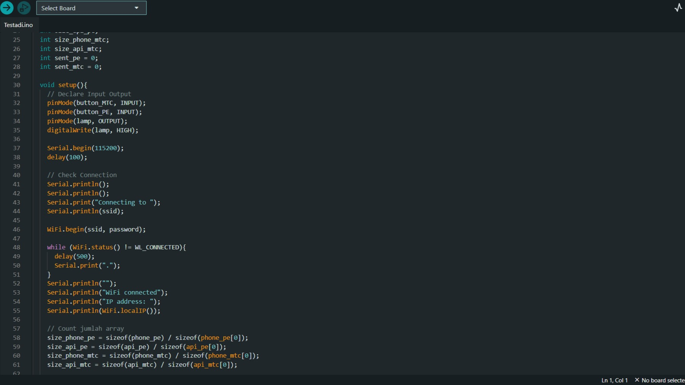
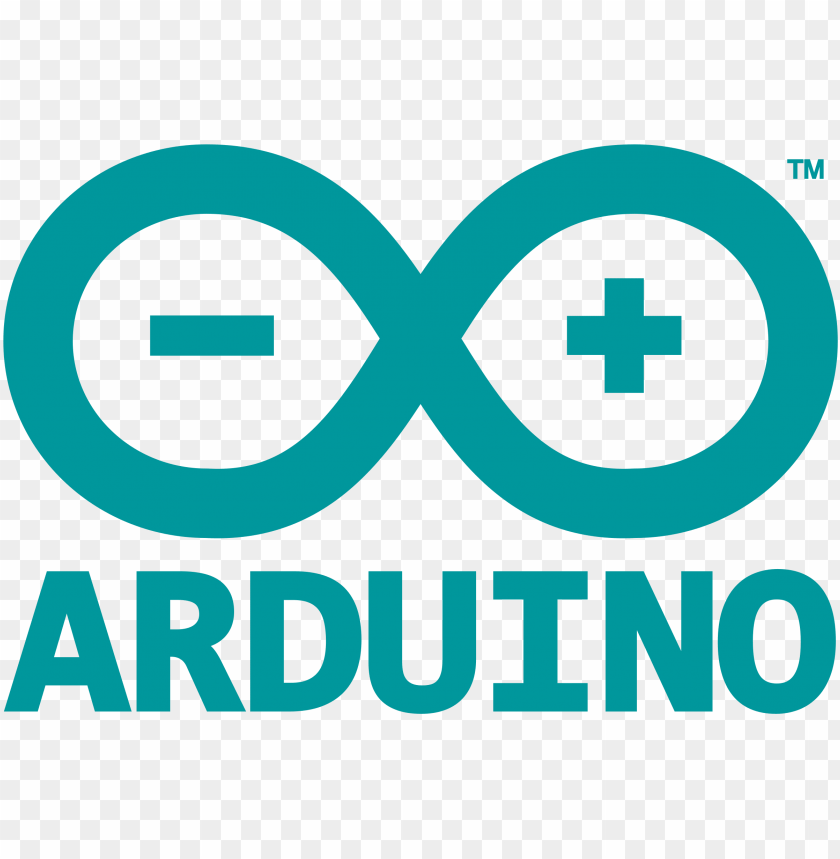

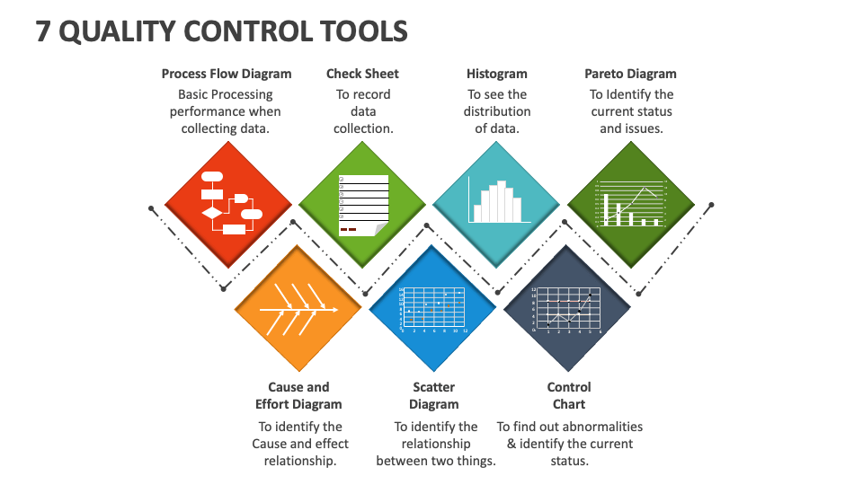
Data Analytics & Quality Control Dashboards
Production & Quality KPI Dashboard (Power BI)
Developed Power BI dashboards for production planning, quality metrics, and operational KPIs with integration from multiple data sources (ERP, databases, Excel). Built automated daily production vs actual reports covering 20+ product types. Created quality defect tracking and analysis dashboards supporting data-driven improvement initiatives. Reduced reporting preparation time by 60% while improving data accuracy.
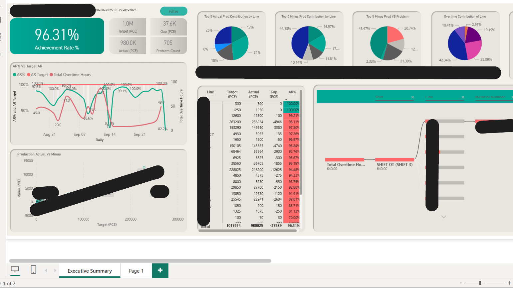
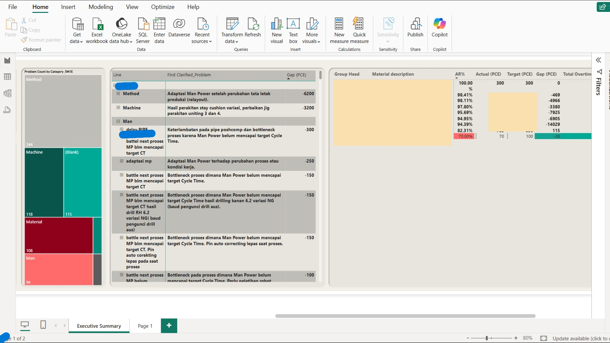


Advanced Excel Analytics for Quality & Operations
Applied advanced Excel techniques including VLOOKUP, HLOOKUP, Pivot Tables, and VBA Macros for quality data analysis and operational reporting. Developed structured data formats for consistency, traceability, and audit readiness. Created automated analysis templates for quality metrics, defect tracking, and production efficiency monitoring.
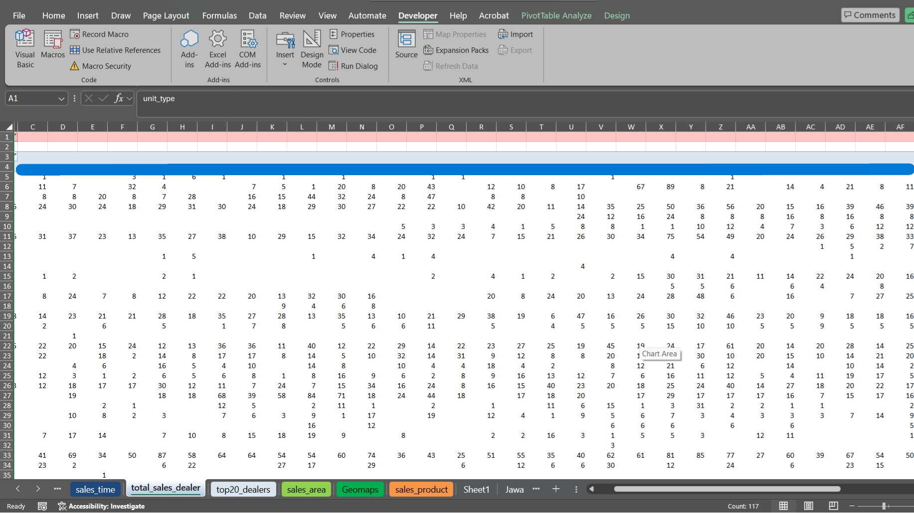
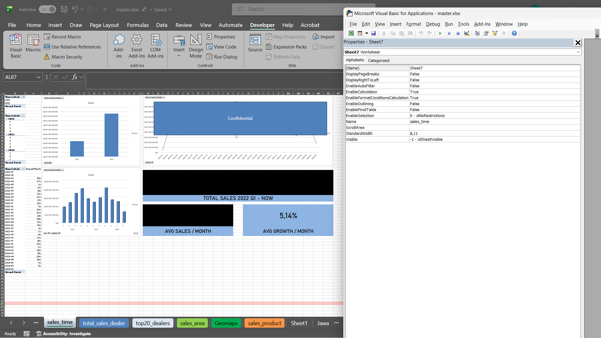

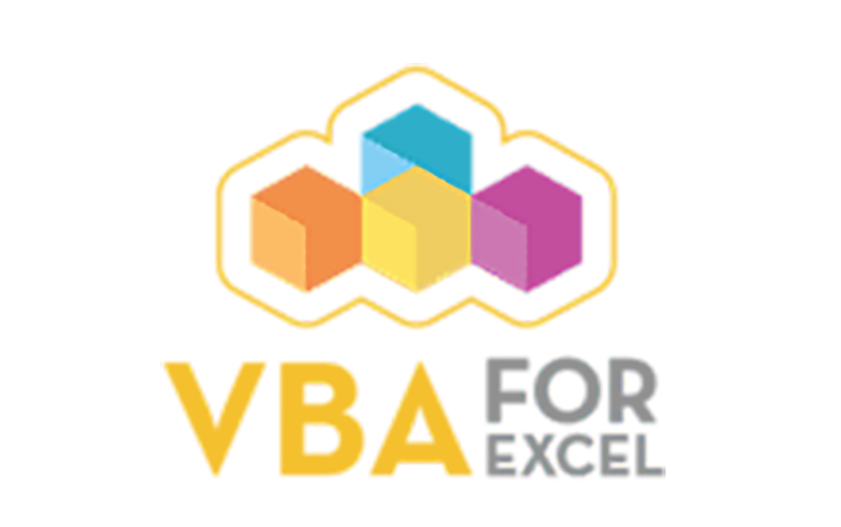
Engineering Systems & Technical Documentation
EV & ICE Vehicle Engineering (Design, Testing, Validation)
Contributed end-to-end engineering work for electric and ICE 3-wheel vehicles covering design, prototyping, testing, and validation. Supported electrical system integration including BMS, motor controllers, and CAN bus communication. Conducted performance testing, data logging, and technical documentation for regulatory certification. Vehicles deployed commercially with proven reliability in field operations.
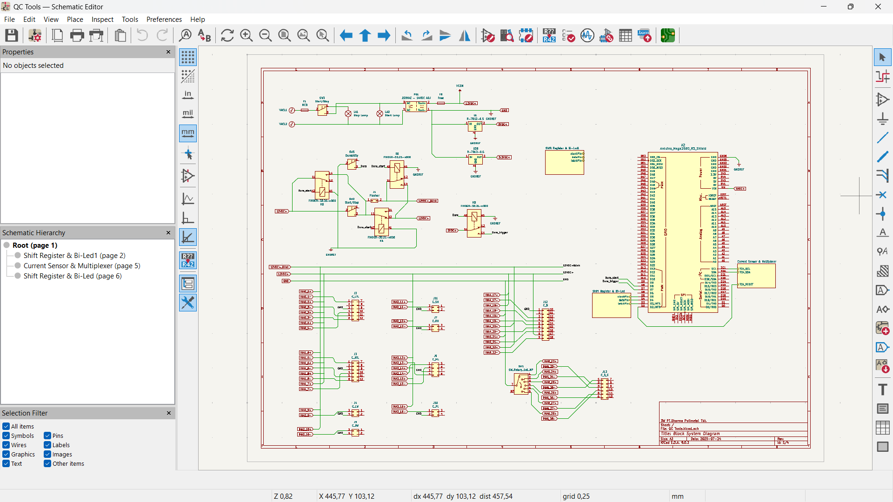
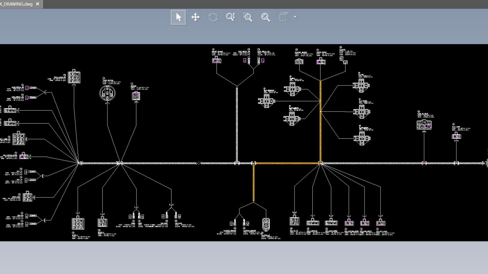


Electrical System Architecture & Troubleshooting
Led reverse engineering and documentation of complete vehicle electrical systems. Built comprehensive electrical reference database including component specifications, wiring diagrams, and diagnostic procedures. Created troubleshooting knowledge base and diagnostic tools reducing problem resolution time by 40-50%. Continue to serve as technical advisor for complex electrical quality issues.
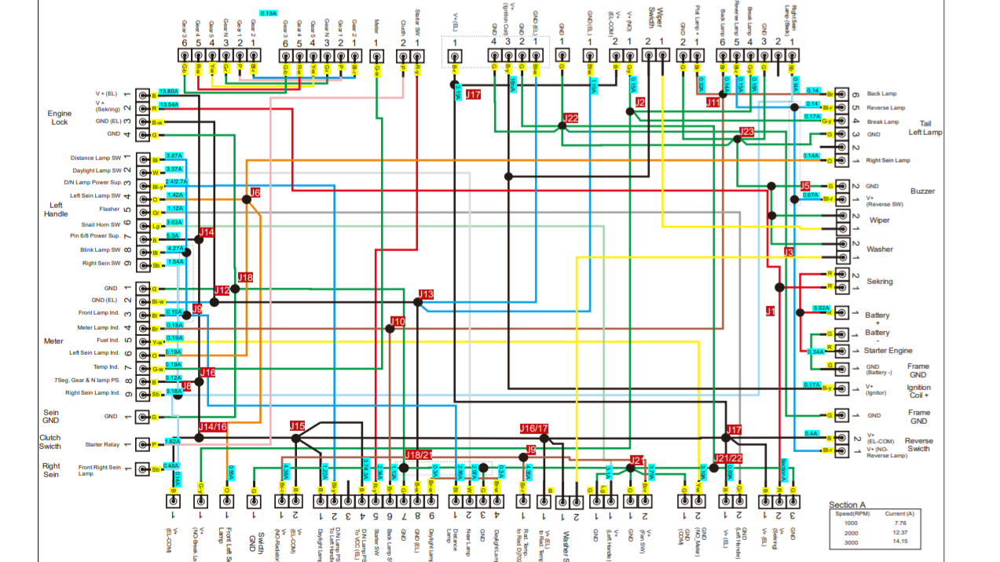
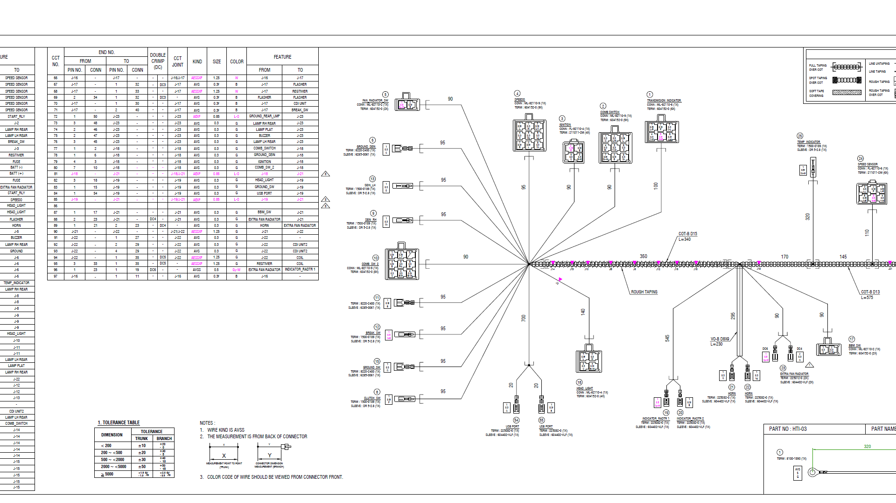

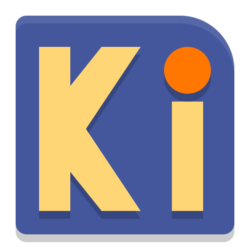